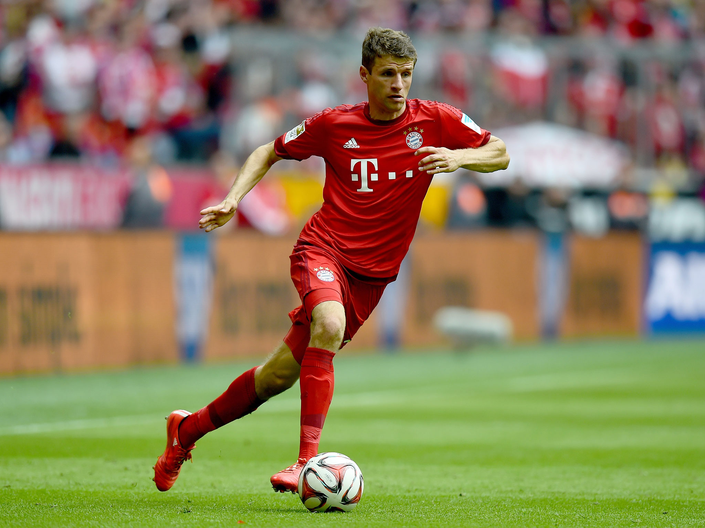
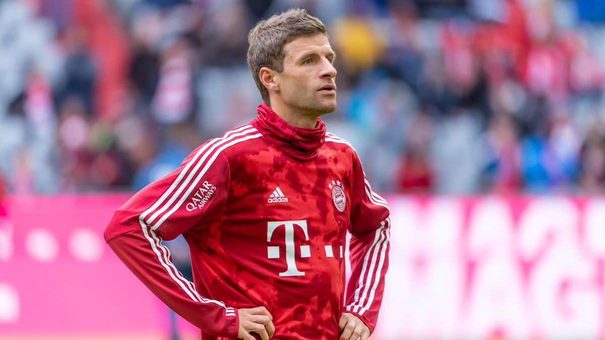

Thomas Müller (Weilheim-Schongau, Baviera; 13 de septiembre de 1989) es un futbolista alemán que juega de delantero y mediocampista en el Bayern de Múnich de la Bundesliga alemana, y la selección de fútbol de Alemania. Es el futbolista alemán que más títulos ha conquistado en toda la historia del futbol, con un total de 30. Es el goleador más joven de la historia en un Mundial, ya que fue el goleador en Sudáfrica en el año 2010 con 20 años y 10 meses. Es el futbolista con más asistencias en la historia de la Bundesliga desde que estas se contabilizan. Es el tercer máximo goleador de la historia del Bayern de Múnich. Es el alemán que más goles anotó en Champions League desde que esta se denomina así. Fue el jugador que más kilometraje realizó en el Mundial de Brasil 2014, que finalmente ganó: recorrió 83.957 km. También es el futbolista que más victorias registra con la camiseta del Bayern de Múnich en la historia de la Bundesliga: quebró el record establecido por Oliver Kahn de 260 en noviembre del 2020. El 19 de noviembre de 2021, se convirtió en el tercer jugador en la historia en disputar 600 o más partidos con el Bayern de Múnich, pero el primer futbolista de campo que lo hace, ya que solo disputaron más partidos que él los arqueros Sepp Maier (666) y Oliver Kahn (632). Se formó como futbolista profesional en la cantera del Bayern de Múnich. Debutó con el primer equipo el 15 de agosto del año 2008 bajo las órdenes del técnico alemán Jürgen Klinsmann reemplazando a Miroslav Klose en un partido de la Bundesliga en la que el Bayern jugó contra el Hamburgo en el Allianz Arena durante la temporada 2008/09. En la temporada 2009/10, se afianzó como titular en el primer equipo bajo las órdenes de Louis van Gaal, que lanzó a la prensa su histórica frase: "Müller juega siempre". Jugó un total de 52 partidos, siendo el segundo jugador del equipo en partidos disputados, con uno menos que Philipp Lahm. En esa temporada, el club logró ganar la Bundesliga y la Copa de Alemania, y alcanzó la final de la Liga de Campeones de la UEFA. Al final de la temporada, fue convocado para disputar la Copa Mundial de Fútbol de 2010 celebrada en Sudáfrica con la selección de fútbol de Alemania, consiguiendo esta el tercer lugar. Fue nombrado mejor jugador joven del torneo y ganó la Bota de Oro con cinco goles y tres asistencias. El 15 de septiembre de 2009, Müller anotó su primer doblete en la Liga de Campeones en un 3-0 ante el Maccabi Haifa, convirtiéndose en el anotador de un doblete más joven del FCB en la competición reina. El 1 de mayo de 2010, el gran bávaro marcó los tres goles en una victoria por 3-1 contra el VfL Bochum y, por lo tanto, su primer triplete en el fútbol profesional. A los 20 años y 230 días, sigue siendo el hombre más joven del Bayern en conseguirlo en la historia de la Bundesliga. Thomas Müller marcó un hat-trick en el primer partido de Alemania en la Copa Mundial de Fútbol 2014 contra Portugal el 16 de junio de 2014. El 13 de julio de 2014, se coronó campeón del mundo con la selección de Alemania. En el torneo, disputó 7 partidos, anotó 5 goles y dio 3 asistencias, además de conseguir el Balón de Plata y la Bota de Plata de la Copa del Mundo de 2014.
2009-10
En febrero de 2009, Müller firmó su primer contrato como profesional con el primer equipo, efectivo desde la temporada 2009–10, junto con su compañero Holger Badstuber, del equipo reserva. Estaba preparado para ser cedido o incluso traspasado, para encontrarse con el primer equipo, pero con la cita del entrenador Louis van Gaal, ambos jugadores se convirtieron en jugadores fijos en el primer equipo del Bayern de Múnich a principio de la temporada. En los primeros encuentros fue un sustituto regular, y el 12 de septiembre de 2009 jugó contra el Borussia Dortmund y anotó dos goles, terminando el partido 5–1. Tres días más tarde, anotó otro gol en un partido de la Champions League contra el Maccabi Haifa, que acabó 3–0. Acabó septiembre siendo nombrado «Jugador del mes». Después del partido con el Maccabi Haifa, Müller disputó casi todos los encuentros restantes como titular, perdiéndose solo un partido —un encuentro de la Liga de Campeones contra Burdeos, para el que estaba sancionado, tras haber recibido una tarjeta roja en un anterior encuentro contra el mismo equipo. El 4 de febrero de 2010 el Bayern de Múnich anunció que había firmado un nuevo contrato que le mantendría en el club hasta 2013. Durante la segunda mitad de la temporada, Müller siguió en el once inicial usualmente jugando un papel de delantero centro debido a la disponibilidad de los jugadores laterales Franck Ribéry y Arjen Robben. En abril de 2010 anotó el segundo gol en contra del Schalke 04, donde ganaron 2–1, logrando el título de liga, y en el penúltimo encuentro de la liga marcó la primera tripleta de su carrera, en un partido que terminó 3-1 sobre Bochum, y que eficazmente aseguró el título de liga para el Bayern. Esto fue confirmado una semana más tarde con una victoria de 3–1 contra Hertha Berlín, un encuentro que Müller inició. Había jugado en los 34 encuentros de la Bundesliga en la temporada, iniciando 29 de ellos, marcando 13 goles y dando 11 asistencias. Bayern y Müller estaban de regreso en Berlín la siguiente semana, para enfrentarse al Werder Bremen en la final de la Copa de Alemania. Müller fue titular en el encuentro, que el Bayern ganó por 4-0. Müller había anotado cuatro goles y había hecho dos asistencias durante la competición, lo cual le hizo un goleador para la temporada. La temporada del Bayern acabó en el estadio Santiago Bernabéu en Madrid contra Inter en la final de la Liga de Campeones de la UEFA. Sin embargo, perdieron 2–0, con ambos goles anotados por Diego Milito. Müller estaba en la alineación inicial, y tuvo una oportunidad clave después del descanso, con el Bayern perdiendo 1-0, pero su oportunidad fue frustrada por el portero Júlio César. Müller tuvo una decepción por esta derrota,17 pero acabó su primera temporada como un jugador regular del equipo, participando en 52 encuentros y marcando un total de 19 goles en todas las competiciones.20 En una encuesta bajo la dirección de la revista deportiva Kicker, y con el voto de sus compañeros, fue elegido como el mejor recién llegado de la temporada del 2009–10, y fue nombrado en el equipo ideal de la temporada. Müller acredita a Van Gaal por haber tenido la parte más grande en su subida al éxito — el entrenador había llegado con una gran reputación para promover a jugadores de la cantera, particularmente en el Ajax, y le había dado su oportunidad en el primer equipo, diciendo «Conmigo, Müller siempre jugará». Müller describe a Van Gaal como «un técnico de intelecto», que hace a los jugadores «mejorar todo el tiempo».
2019-20
Con la victoria en la Liga de Campeones de la UEFA 2019-20 se convirtió en uno de los jugadores en conseguir dos tripletes en el Bayern de Múnich junto a Javi Martínez, Manuel Neuer, David Alaba y Jérôme Boateng, entrado en el selecto club del que forman parte jugadores como Samuel Eto'o, Xavi Hernández, Andrés Iniesta, Lionel Messi y Gerard Piqué.